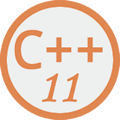

C++11教程：C++11新特性大汇总
C++11 是第二个真正意义上的 C++ 标准，也是 C++ 的一次重大升级。C++11 增加了很多现代编程语言的特性，比如自动类型推导、智能指针、lambda 表达式等，这使得 C++ 看起来又酷又潮，一点也不输 Java 和 C#。
虽然学习 C++11 需要花些时间，但这是非常值得的；C++11 非常实用，它不但提高了开发效率，还让程序更加健壮和优雅。程序员应该乐于升级换代已有的知识，而学习和使用 C++11 早就是大势所趋，请大家不要抗拒。
有些 C++11 新特性只是局限于某些特定的应用场景，比如链接库、多线程编程等，为了避免乏味枯燥，读者可以有选择性地阅读，先学习那些在实际开发中常用的知识点，而略过那些“偏难怪”的部分。
本教程针对有 C++ 基础的读者，如果你还不了解 C++，请转到《C++教程》。
- 教程目录：
- 1. C++ 11是什么，C++ 11标准的由来
- 2. C++ auto类型推导完全攻略
- 3. C++ decltype类型推导完全攻略
- 4. 汇总auto和decltype的区别
- 5. C++返回值类型后置（跟踪返回值类型）
- 6. C++11对模板实例化中连续右尖括号>>的改进
- 7. C++11使用using定义别名（替代typedef）
- 8. C++11支持函数模板的默认模板参数
- 9. C++11在函数模板和类模板中使用可变参数
- 10. C++11 tuple元组详解
- 11. C++11列表初始化（统一了初始化方式）
- 12. C++11 lambda匿名函数用法详解
- 13. C++11非受限联合体（union）
- 14. C++11 for循环（基于范围的循环）详解
- 15. C++11 for循环使用注意事项
- 16. C++11 constexpr：验证是否为常量表达式（长篇神文）
- 17. C++11 constexpr和const的区别
- 18. C++11 long long超长整形详解
- 19. C++11右值引用（一看即懂）
- 20. C++11移动构造函数的功能和用法
- 21. C++11 move()函数：将左值强制转换为右值
- 22. C++11引用限定符的用法
- 23. C++11完美转发及其实现
- 24. C++11 nullptr：初始化空指针
- 25. C++11 shared_ptr智能指针（超级详细）
- 26. C++11 unique_ptr智能指针
- 27. C++11 weak_ptr智能指针
关注公众号「站长严长生」，在手机上阅读所有教程，随时随地都能学习。
不定期发布学习路线+书籍文档+优质视频，为初学者指点迷津。
绑定网站登录功能，再也不用担心密码丢失。
编程11年，建站10年，创业7年，写作6年，既有硬知识，也有软技能。
长期更新，坚持原创，敢说真话，凡事有态度。

微信扫码即可关注